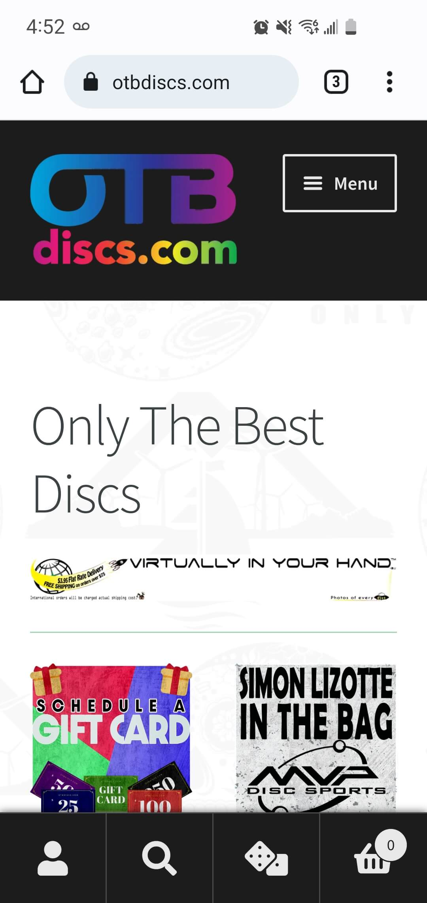
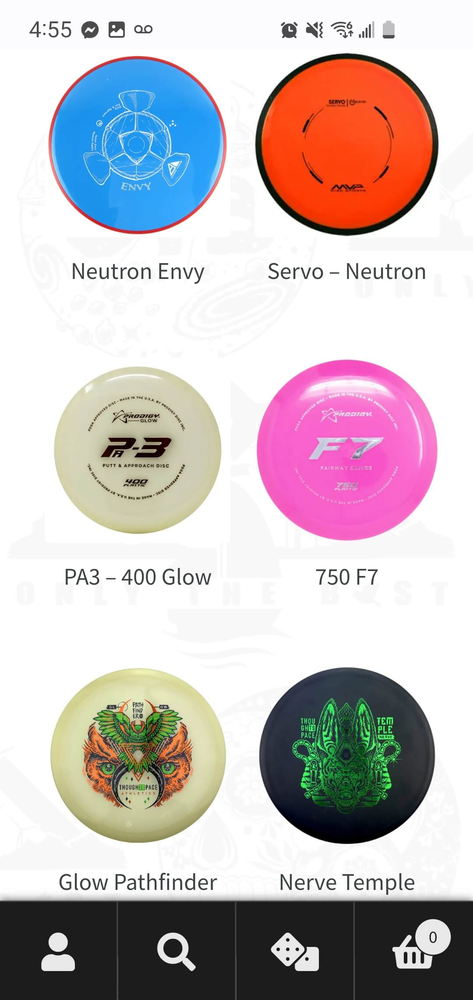
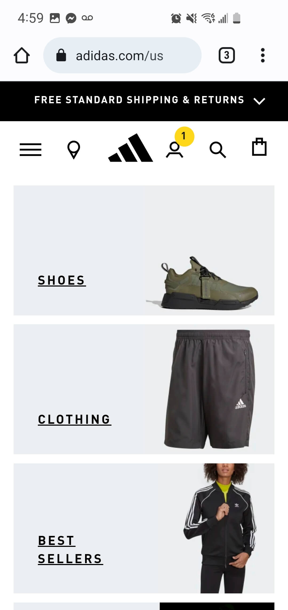

Contrast
OTB discs
I feel that this sight shows a good examply of contrast through the white background and black elements. It also has the products looking bright, so we know what we are looking for.
Visual Balance
OTB discs
This website shows good visual balance because it has a uniform space over the x and y axis. It is even throught looking at all products.
Consistency
Adidas
This website shows consistency. It gives a uniform look to finding products. this is a box with an image and a description of the product.